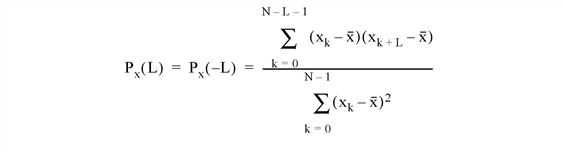
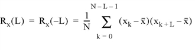

The A_CORRELATE function computes the autocorrelation Px(L) or autocovariance Rx(L) of a sample population X as a function of the lag L.


where x is the mean of the sample population x = (x0, x1, x2, ... , xN-1).
Note: This routine is primarily designed for use in 1-D time-series analysis. The mean is subtracted before correlating. For image processing, methods based on FFT should be used instead if more than a few tens of points exist. For example:
Function AutoCorrelate, X Temp = FFT(X,-1) RETURN, FFT(Temp * CONJ(Temp), 1)END
This routine is written in the IDL language. Its source code can be found in the file a_correlate.pro in the lib subdirectory of the IDL distribution.
Result = A_CORRELATE(X, Lag [, /COVARIANCE] [, /DOUBLE] )
An n-element integer, single-, or double-precision floating-point vector.
An n-element integer vector in the interval [-(n-2), (n-2)], specifying the signed distances between indexed elements of X.
Set this keyword to compute the sample autocovariance rather than the sample autocorrelation.
Set this keyword to force the computation to be done in double-precision arithmetic.
; Define an n-element sample population:
X = [3.73, 3.67, 3.77, 3.83, 4.67, 5.87, 6.70, 6.97, 6.40, 5.57]
; Compute the autocorrelation of X for LAG = -3, 0, 1, 3, 4, 8:
lag = [-3, 0, 1, 3, 4, 8]
result = A_CORRELATE(X, lag)
PRINT, result
IDL prints:
0.0146185 1.00000 0.810879 0.0146185 -0.325279 -0.151684
|
4.0 |
Introduced |
CORRELATE , C_CORRELATE , M_CORRELATE , P_CORRELATE, R_CORRELATE